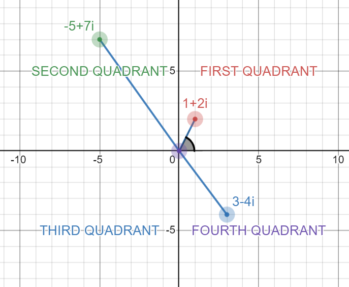
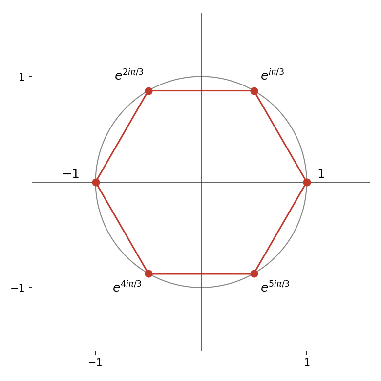

Extension · Beyond the TMUA — for STEP and interviews
Complex Numbers
When the discriminant goes negative: the algebra and geometry of \(i\), de Moivre's theorem, roots of unity, loci and rotations on the Argand diagram — and complex numbers as a machine for proving real identities.
§8.1Introduction
In previous topics we learned to solve quadratic equations \(x^2+ax+b=0\), and that such an equation only has real solutions when its discriminant \(\Delta=a^2-4b\) is non-negative. However, we can still interpret the solution when \(\Delta\) is negative — it just isn't a real number, but a complex one. We take a look at the properties of complex numbers, beginning with the algebraic ones, then observe the similarity between complex numbers and analytical geometry, and start seeing complex numbers as geometric quantities rather than algebraic ones. (Complex numbers are not on the TMUA syllabus — this topic serves STEP and interviews.)
§8.2The set of complex numbers
The simplest equation with negative discriminant is \(x^2+1=0\). We introduce a new number, written \(i\), as a solution. We want complex numbers to behave like the numbers we are used to — addable, multipliable, subtractable, divisible (by non-zero) — so the set certainly needs all numbers of the type \(a+bi\) with \(a,b\) real. Hence we define \[\mathbb C=\{a+bi\mid a,b\in\mathbb R\}.\] You can think of \(i\) as "the square root of \(-1\)" in a sense — but keep in mind \((-i)^2=i^2=-1\), so the square root of \(-1\) has multiple candidates; as we will see, there is no good way to uniformly define a square root over all complex numbers.
Exercise. Using the usual rules of multiplication and addition (commutativity, distributivity, …), check that adding and multiplying complex numbers yields another complex number.
For \(z=x+yi\) (\(x,y\) real), \(x\) is the real part and \(y\) the imaginary part: \(\operatorname{Re}(z)=x\), \(\operatorname{Im}(z)=y\).
- Let \(z=a+bi\) and \(w=c+di\ne0\); we want \(\frac{a+bi}{c+di}\) in real-and-imaginary form.
- Multiply top and bottom by \(c-di\): \(\dfrac{(a+bi)(c-di)}{(c+di)(c-di)}\).
- The denominator is \(c^2-(di)^2=c^2+d^2\) — a real number.
- Expand the numerator and group in terms of \(i\) (using \(i^2=-1\)).
- Result: \(\dfrac{ac+bd}{c^2+d^2}+\dfrac{bc-ad}{c^2+d^2}\,i\).
The number \(c-di\) was a very useful tool — useful enough to deserve its own definition:
For \(z=a+bi\), the number \(\bar z=a-bi\) is the conjugate of \(z\).
For complex \(z,w\): (1) \(\overline{z+w}=\bar z+\bar w\); (2) \(\overline{zw}=\bar z\cdot\bar w\); (3) \(\overline{-z}=-\bar z\); (4) if \(z\ne0\), \(\overline{1/z}=1/\bar z\). All can be proved directly by expanding — left as exercises.
Observe that \(z\bar z=x^2+y^2\) is always a non-negative real number. Its square root is the absolute value (or modulus) \(|z|\); for real \(z\), \(|z|=\sqrt{x^2}=|x|\), agreeing with the usual notion.
(1) \(|z+w|\le|z|+|w|\) (triangle inequality); (2) \(|zw|=|z||w|\); (3) \(|-z|=|z|\); (4) if \(z\ne0\), \(|1/z|=1/|z|\).
§8.3Polynomials and complex numbers
Have we included all numbers we "should"? The following theorem (whose proof is too advanced for our purposes) shows that \(\mathbb C\) is "complete":
Any polynomial in one variable with complex coefficients has a complex number as a solution.
Let \(f\) have degree \(n\); by the theorem, there is \(z\) with \(f(z)=0\). Then \(x-z\) divides \(f\): otherwise, by polynomial division, \(f(x)=q(x)(x-z)+a\), and plugging in \(z\) forces \(a=0\). Inductively, \(f\) has exactly \(n\) solutions (counting repeats).
Now let \(f\) have real coefficients. Then \(f(\bar z)=\overline{f(z)}\) — so if \(z\) is a root, so is \(\bar z\): non-real roots come in conjugate pairs. Grouping each strictly complex root with its conjugate produces a factorisation of \(f\) into real irreducible pieces: with \(z_1=a+bi\), \[(x-z_1)(x-\bar z_1)=(x-a-bi)(x-a+bi)=(x-a)^2-(bi)^2=x^2-2ax+a^2+b^2,\] a polynomial in \(x\) with real coefficients.
§8.4Exponentiation
For \(z=x+yi\) we define \[e^{x+yi}=e^x\big(\cos y+i\sin y\big).\] Why this definition? Recall the Maclaurin series from the Differentiation topic: \[e^x=\sum_{n\ge0}\frac{x^n}{n!},\qquad\sin x=\sum_{n\ge0}\frac{(-1)^n}{(2n+1)!}x^{2n+1},\qquad\cos x=\sum_{n\ge0}\frac{(-1)^n}{(2n)!}x^{2n}.\] Much of the convergence theory for real series carries over to complex numbers unchanged (we won't discuss the details); assuming the series for \(e^x\) works for imaginary \(x\) and separating even and odd powers of \(i\), we see exactly that \(e^{iy}=\cos y+i\sin y\). It is convenient that \(e^z\) keeps the same Maclaurin series for every complex number.
Exercise. Prove that this definition satisfies \(e^z\cdot e^w=e^{z+w}\).
For real \(\theta\) and positive integer \(n\): \[(\cos\theta+i\sin\theta)^n=\cos(n\theta)+i\sin(n\theta).\]
Note that we have not defined exponentiation with a complex base other than \(e\): formulas such as \(a^zb^z=(ab)^z\) or \(e^{zw}=(e^z)^w\) cannot yet even be made sense of in general — de Moivre gives the latter for rational \(w\), but \(a^w\) is undefined for \(a\ne e\) and irrational \(w\).
§8.5Geometric interpretation

Beyond being a great tool for polynomials, complex numbers can be thought of geometrically: \(z=x+yi\) is the vector in the plane from \((0,0)\) to \((x,y)\). The real part is the first coordinate, the imaginary part the second, and \(|z|\) is the length of the vector. Interpreted this way, the plane is called the Complex Plane, with Real and Imaginary axes; such a plot is sometimes called an Argand diagram.
To specify a complex number it suffices to give its modulus and its angle. An argument of \(z=x+yi\) is an angle \(\theta\) (in radians) such that following the half-line from the origin at angle \(\theta\) for length \(|z|\) lands on \(z\). Since the vector of modulus \(r\) and argument \(\theta\) is \((r\cos\theta,r\sin\theta)\), we can write \[z=re^{i\theta}.\] If \(\theta\) is an argument, so is \(\theta+2k\pi\) for any integer \(k\). The principal argument is the unique argument in \([0,2\pi)\) — note this convention is not universal in the literature (some books use \((-\pi,\pi]\)), but it is the one we adopt.
To compute the principal argument, let \(\alpha=\arctan|y/x|\) be the acute angle the vector makes with the \(x\)-axis (for \(z\) off the axes), and adjust by quadrant: first quadrant \(\theta=\alpha\); second \(\theta=\pi-\alpha\); third \(\theta=\pi+\alpha\); fourth \(\theta=2\pi-\alpha\); and on the imaginary axis, \(\theta=\frac\pi2\) (\(y>0\)) or \(\frac{3\pi}2\) (\(y<0\)).
Multiplication and division become beautifully simple in modulus–argument form: for \(z_k=r_ke^{i\theta_k}\), \[z_1z_2=(r_1r_2)e^{i(\theta_1+\theta_2)},\qquad\frac{z_1}{z_2}=\frac{r_1}{r_2}e^{i(\theta_1-\theta_2)}.\] These equations are certainly true — but it is not true that the principal argument of \(z_1z_2\) is \(\theta_1+\theta_2\); it is \(\theta_1+\theta_2\) or \(\theta_1+\theta_2-2\pi\), whichever lands in \([0,2\pi)\) (informally, \(\theta_1+\theta_2\) mod \(2\pi\)); similarly for the quotient.
§8.6Roots of complex numbers
Consider \(f(z)=z^n-w\) for a complex number \(w\): by §8.3 it has \(n\) roots. Write \(w=re^{i\theta}\) and seek \(z=se^{i\alpha}\): we need \(s^ne^{in\alpha}=re^{i\theta}\), so \(s^n=r\) and \(n\alpha-\theta\) is a multiple of \(2\pi\). The values \(\alpha=\frac{\theta+2k\pi}n\) for integers \(0\le k<n\) all land in \([0,2\pi)\) and give distinct roots:
The \(n\) distinct \(n\)th roots of \(w=re^{i\theta}\) are \[z_k=r^{\frac1n}\,e^{\,i\frac{\theta+2k\pi}n},\qquad k=0,1,\dots,n-1.\]
Why do we care so much about this specific polynomial? It is one example of a high-degree polynomial we can fully solve — but its solutions also have a striking geometric property. Plot the solutions of \(z^6=1\):

This is true in general:
§8.7Geometry of the complex plane
Having seen complex numbers as vectors, we can turn the whole machinery around: instead of using geometry to understand \(\mathbb C\), use \(\mathbb C\) to do geometry. The key is a dictionary between algebraic expressions and geometric quantities. The fundamental entry: \(|z-w|\) is the distance between the points \(z\) and \(w\) — because \(z-w\) is the vector from \(w\) to \(z\), and the modulus is its length.
- \(|z-a|=r\): the circle with centre \(a\) and radius \(r\) — "the points at distance \(r\) from \(a\)". (\(|z-a|<r\) is the inside, \(|z-a|>r\) the outside.)
- \(|z-a|=|z-b|\): the perpendicular bisector of the segment joining \(a\) and \(b\) — "equidistant from \(a\) and \(b\)".
- \(\arg(z-a)=\theta\): the half-line starting at \(a\) (excluded) in the direction \(\theta\).
- \(|z-a|=k|z-b|\) with \(k\ne1\): a circle (the circle of Apollonius) — squaring both sides and expanding always lands on a circle's equation, as in the problems below.
Translate, don't memorise: read each equation aloud as a sentence about distances, and the picture draws itself. Once the locus is identified, the coordinate geometry of Topic 5 takes over.
In modulus–argument form the rule \(z_1z_2=(r_1r_2)e^{i(\theta_1+\theta_2)}\) says: multiplying by \(w=\rho e^{i\varphi}\) scales by \(\rho\) and rotates by \(\varphi\) about the origin. In particular, multiplication by \(i\) is a quarter-turn anticlockwise, and multiplication by \(e^{i\theta}\) is a pure rotation. To rotate about an arbitrary point \(a\) instead of the origin: translate \(a\) to the origin, rotate, translate back — \[z\ \longmapsto\ a+(z-a)e^{i\theta}.\] This one line replaces the rotation matrices of further mathematics, and is the standard tool for "the triangle/square has vertices…" interview questions: e.g. three points \(z_1,z_2,z_3\) form an equilateral triangle precisely when rotating one side by \(\pm\frac\pi3\) about a shared vertex carries it onto the other.
Example. Describe the set \(|z-3-4i|=5\). Reading the sentence: points at distance 5 from \(3+4i\) — a circle of radius 5 centred at \((3,4)\). Since \(|3+4i|=5\), the circle passes through the origin. And the set \(|z-i|=|z+1|\)? Equidistant from \(i\) and \(-1\): the perpendicular bisector of the segment from \((0,1)\) to \((-1,0)\) — the line \(y=-x\), as a quick sketch (or expanding the moduli) confirms.
§8.8Trigonometric sums via complex numbers
We close with the technique that best justifies the whole chapter: complex numbers as a machine for proving real identities. The idea, in one line: a sum of sines or cosines is the imaginary or real part of a geometric series of complex exponentials — and geometric series we mastered back in the Sequences topic.
- Let \(C=\sum\cos(kx)\) and \(S=\sum\sin(kx)\) be the paired sums (the pairing trick of §7.4.2, in complex clothing). Then \[C+iS=\sum e^{ikx},\] a geometric series with ratio \(e^{ix}\).
- Sum it with the geometric-sum formula (valid when \(e^{ix}\ne1\), i.e. \(x\) not a multiple of \(2\pi\)).
- Factor half-angles out of every bracket of the form \(e^{i\varphi}-1=e^{i\varphi/2}\left(e^{i\varphi/2}-e^{-i\varphi/2}\right)=e^{i\varphi/2}\cdot2i\sin\frac\varphi2\) — the identity of Question 9 below.
- The expression collapses to (real factor) × \(e^{i(\cdot)}\); take real and imaginary parts to read off \(C\) and \(S\) simultaneously.
Worked example. Find \(\displaystyle S=\sum_{k=1}^n\sin(kx)\), for \(x\) not a multiple of \(2\pi\).
The cosine formula instantly settles Drill 4 of the Logic topic: with \(x=\frac\pi4\), the sum \(\sum_{k=1}^n\cos\frac{k\pi}4\) vanishes exactly when \(\sin\frac{n\pi}8=0\) or \(\cos\frac{(n+1)\pi}8=0\), i.e. \(n\equiv0\) or \(3\pmod 8\) — the answer we previously extracted by tabulating a full period.
§8.9Problems
Express \(\dfrac{3+4i}{1-2i}\) in the form \(a+bi\), and find its modulus and principal argument (the latter in terms of \(\arctan\)).
Show solution
Multiply by the conjugate: \(\dfrac{(3+4i)(1+2i)}{(1-2i)(1+2i)}=\dfrac{3+6i+4i-8}{1+4}=\dfrac{-5+10i}5=-1+2i\). Modulus: \(\sqrt{1+4}=\sqrt5\). The point \((-1,2)\) is in the second quadrant, so the principal argument is \(\pi-\arctan\!\left|\frac2{-1}\right|=\pi-\arctan2\).
Prove parts (2), (3) and (4) of the properties of the conjugate, and parts (2)–(4) of the properties of the absolute value.
Show solution
All are direct expansions; we show conjugate (2) as the model. With \(z=a+bi\), \(w=c+di\): \(zw=(ac-bd)+(ad+bc)i\), so \(\overline{zw}=(ac-bd)-(ad+bc)i\); and \(\bar z\bar w=(a-bi)(c-di)=(ac-bd)-(ad+bc)i\) — equal. For modulus (2): \(|zw|^2=zw\,\overline{zw}=z\bar z\,w\bar w=|z|^2|w|^2\), then take square roots. (3) is immediate, and (4) follows from (2) applied to \(z\cdot\frac1z=1\): \(|z|\left|\frac1z\right|=1\) and \(\bar z\,\overline{(1/z)}=1\).
The polynomial \(z^3-5z^2+kz-13=0\), with \(k\) real, has \(2+3i\) as a root. Find \(k\) and the remaining roots.
Show solution
Real coefficients force the conjugate \(2-3i\) to be a root too (§8.3). The conjugate pair contributes the real quadratic factor \(z^2-(\text{sum})z+(\text{product})=z^2-4z+13\). Writing \(z^3-5z^2+kz-13=(z^2-4z+13)(z-r)\) and comparing constant terms: \(-13r=-13\), so \(r=1\) (and the \(z^2\) coefficient checks: \(-4-r=-5\) ✓). Expanding gives \(k=13+4=17\). Roots: \(2\pm3i\) and \(1\).
Using de Moivre's theorem with \(n=3\), express \(\cos3\theta\) in terms of \(\cos\theta\) and \(\sin3\theta\) in terms of \(\sin\theta\) — and compare with Question 8 of the Algebra problems (MAT 1994).
Show solution
\((\cos\theta+i\sin\theta)^3=\cos3\theta+i\sin3\theta\). Expanding the left side binomially: \(\cos^3\theta+3i\cos^2\theta\sin\theta-3\cos\theta\sin^2\theta-i\sin^3\theta\). Matching real and imaginary parts, then using \(\sin^2+\cos^2=1\): \[\cos3\theta=4\cos^3\theta-3\cos\theta,\qquad \sin3\theta=3\sin\theta-4\sin^3\theta.\] The second is precisely the identity proved by repeated addition formulae in MAT 1994 (Algebra, Question 8) — one binomial expansion versus a page of trigonometry.
Find all solutions of \(z^4=-16\), and plot them on an Argand diagram. What shape do they form?
Show solution
\(-16=16e^{i\pi}\), so the fourth roots are \(2e^{i(\pi+2k\pi)/4}\) for \(k=0,1,2,3\): arguments \(\frac\pi4,\frac{3\pi}4,\frac{5\pi}4,\frac{7\pi}4\), i.e. \[z=\sqrt2(\pm1\pm i).\] On the Argand diagram they sit on the circle of radius 2 at the four "diagonal" positions — a square, as the general theory of §8.6 promises.
Let \(\omega=e^{2\pi i/n}\) with \(n\ge2\). Show that \(1+\omega+\omega^2+\dots+\omega^{n-1}=0\), (i) by the geometric-sum formula from the Sequences topic, and (ii) by a symmetry argument on the Argand diagram.
Show solution
(i) Geometric sum with ratio \(\omega\ne1\): \(1+\omega+\dots+\omega^{n-1}=\dfrac{\omega^n-1}{\omega-1}=\dfrac{1-1}{\omega-1}=0\), since \(\omega^n=e^{2\pi i}=1\).
(ii) Let \(S\) be the sum. Multiplying by \(\omega\) rotates every root by \(\frac{2\pi}n\), which merely permutes the set \(\{1,\omega,\dots,\omega^{n-1}\}\) — so \(\omega S=S\), giving \(S(\omega-1)=0\), and since \(\omega\ne1\), \(S=0\). Geometrically: the centroid of a regular polygon centred at the origin is the origin.
Show that \(\left|e^{i\alpha}-e^{i\beta}\right|=2\left|\sin\frac{\alpha-\beta}2\right|\). Hence find the side length of the regular \(n\)-gon formed by the \(n\)th roots of unity, and the limit of \(n\) times this side length as \(n\to\infty\). Interpret the limit geometrically.
Show solution
Factor out the half-angle: \(e^{i\alpha}-e^{i\beta}=e^{i(\alpha+\beta)/2}\left(e^{i(\alpha-\beta)/2}-e^{-i(\alpha-\beta)/2}\right)=e^{i(\alpha+\beta)/2}\cdot2i\sin\frac{\alpha-\beta}2\). Taking moduli, the unit factors drop out. Consecutive \(n\)th roots of unity have arguments differing by \(\frac{2\pi}n\), so the side length is \(2\sin\frac\pi n\). Then \[n\cdot2\sin\frac\pi n=2\pi\cdot\frac{\sin(\pi/n)}{\pi/n}\to2\pi\] as \(n\to\infty\) (the limit \(\frac{\sin x}x\to1\) from the Differentiation topic). Interpretation: the perimeter of the inscribed regular polygon tends to the circumference of the unit circle — Archimedes' own route to \(\pi\).
Describe and sketch the set of complex numbers satisfying \(|z-2|=2|z+1|\).
Show solution
Square both sides and write \(z=x+yi\): \((x-2)^2+y^2=4\left[(x+1)^2+y^2\right]\). Expanding: \(x^2-4x+4+y^2=4x^2+8x+4+4y^2\), so \(3x^2+12x+3y^2=0\), i.e. \(x^2+4x+y^2=0\): completing the square, \((x+2)^2+y^2=4\) — the circle of Apollonius with centre \(-2\) and radius \(2\). Sanity check with easy points: \(z=0\) gives \(|{-2}|=2|1|\) ✓, and indeed \(0\) lies on the circle.
The point \(P\) represents \(z=2+i\). Find the complex number represented by the image of \(P\) after a rotation of \(90^\circ\) anticlockwise about the point representing \(1\). Then find the third vertex \(w\) (there are two answers) making an equilateral triangle with \(1\) and \(z=2+i\).
Show solution
Rotation about \(a=1\): \(w=1+(z-1)i=1+(1+i)i=1+i-1=i\). For the equilateral triangle, rotate \(z\) about \(1\) by \(\pm60^\circ\): \(w=1+(1+i)e^{\pm i\pi/3}\). With \(e^{i\pi/3}=\frac12+\frac{\sqrt3}2i\): \(w=1+\left(\frac12-\frac{\sqrt3}2\right)+\left(\frac12+\frac{\sqrt3}2\right)i=\frac{3-\sqrt3}2+\frac{1+\sqrt3}2i\), and similarly with \(e^{-i\pi/3}\): \(w=\frac{3+\sqrt3}2+\frac{1-\sqrt3}2i\). One line of complex multiplication per vertex — no rotation matrices, no simultaneous equations.
Using the method of §8.8, find a closed form for \(\displaystyle\sum_{k=1}^{n}\cos(kx)\), and verify your formula at \(x=\frac{2\pi}{n}\) using Question 6.
Show solution
From the worked example, taking the real part: \(\displaystyle C=\frac{\sin\frac{nx}2\,\cos\frac{(n+1)x}2}{\sin\frac x2}\). At \(x=\frac{2\pi}n\): \(\sin\frac{nx}2=\sin\pi=0\), so \(C=0\) — consistent with Question 6, since \(\sum_{k=1}^n\cos\frac{2k\pi}n\) is the real part of \(\omega+\omega^2+\dots+\omega^n=0\).
By considering \((1+e^{ix})^n\), show that \[\sum_{k=0}^{n}\binom nk\cos(kx)=2^n\cos^n\!\frac x2\,\cos\frac{nx}2,\] and write down the corresponding result for \(\sum\binom nk\sin(kx)\).
Show solution
By the Binomial Theorem, \((1+e^{ix})^n=\sum_{k=0}^n\binom nke^{ikx}\), whose real and imaginary parts are the two sums. Factor the half-angle from the base: \(1+e^{ix}=e^{ix/2}\left(e^{-ix/2}+e^{ix/2}\right)=2\cos\frac x2\,e^{ix/2}\). Hence \[(1+e^{ix})^n=2^n\cos^n\!\frac x2\;e^{inx/2},\] and taking real and imaginary parts gives \(\sum\binom nk\cos(kx)=2^n\cos^n\frac x2\cos\frac{nx}2\) and \(\sum\binom nk\sin(kx)=2^n\cos^n\frac x2\sin\frac{nx}2\). Setting \(x=0\) in the first recovers \(\sum\binom nk=2^n\) from MAT 1993 (Algebra, Question 5) — the whole family of binomial identities lives inside one complex expansion.